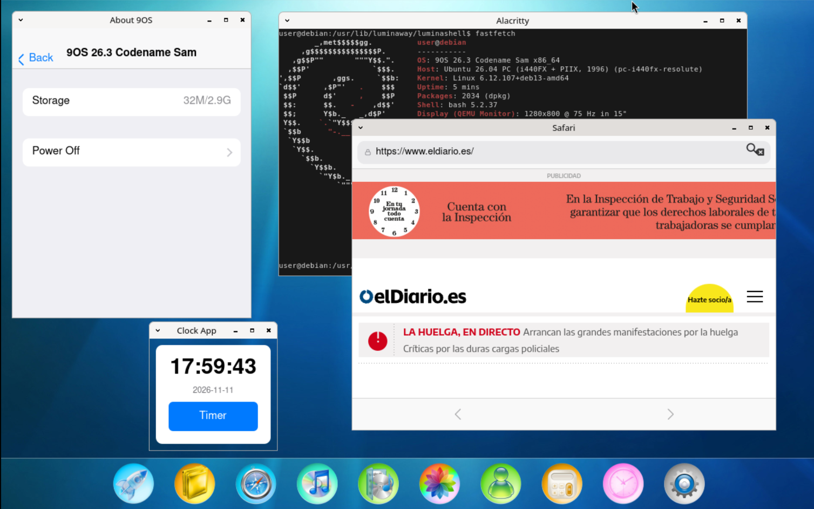

9OS 26.3 Codename Sam
Un sistema operativo bonito, limpio, basado en web y moderno. Con muchas cosas nuevas que irán llegando.
 |

 |

|
¿Qué es 9OS?
9OS es un sistema operativo basado en Debian GNU/Linux con entorno de escritorio propio llamado LúminaWay ((creado en 2025) que consiste en un conjunto de apps básicas (deprecadas en 9OS 26.3, pendientes de eliminación en 9OS 27.0), una shell llamada LúminaShell y un compositor llamado LúminaWay Compositor) y un conjunto de aplicaciones web derivadas de Guadaware.
Historia
Este proyecto viene de otro llamado Guadaware. Que era un sistema operativo móvil 100% web ahora abandonado por problemas con funciones móviles y portabilidad. Desde Guadafón Coop. queriamos diseñar un teléfono móvil con Guadaware preinstalado. El proyecto se llamaba Guadafón Telefunny y ese iba a ser su nombre comercial. Pero no pudimos llevarlo a cabo.
Del proyecto Telefunny salió otro proyecto más fácil de realizar, un reproductor mp3 moderno al que llamaríamos audio9 y correría 9OS. Un sistema operativo derivado de Guadaware que sería igual pero sin funciones móviles. Esta versión de 9OS consistía en unas ramas (9os-stable, 9os-dev) en el repositorio de Guadaware en donde se llevaba su desarrollo.
Entonces, decidimos hacer un experimento llamado 9OS for PC, que consistiría en crear una versión de Debian MATE con Compiz y las apps de 9OS. De esa idea salió 9OS for PC 26.2 Codename Emma y el paquete 9os-for-pc-syspkg. El cual serviría y sigue sirviendo como paquete transformador de Debian hacia, en este caso, 9OS for PC.
Después, decidimos hacer una gran actualización a 9OS for PC 26.2 Codename Emma. Esta actualización recibiría el nombre en código "Sam" y la eliminación en el nombre de el sufijo "for PC". Quedándose así la versión para PC como la versión oficial de 9OS y la del audio9 como 9OS (Legacy).
Esta actualización no solo incluía un cambio de nombre, de codename y de número de versión, que se actualizaría a 26.3. Si no que también recibía una transformación total de la interfaz de usuario y de la base del sistema. Pasando así a eliminar MATE y a adoptar el abandonado LúminaWay como entorno de escritorio predeterminado.
Y esta es toda la historia de momento.
Guadaware -> 9OS (Legacy) -> 9OS for PC -> 9OS
¿Qué vendrá en el futuro?
9OS Rollercoaster
con:
Basado en Debian Sid
Rolling release
Nuevo estilo para las notificaciones
La aplicación de cámara de Guadaware
La aplicación de terminal de Guadaware
App actualizadora
La aplicación de entorno flatpak de Guadaware
Un nuevo dock con aires a la superbar de Windows 7
Un nuevo sistema de fondos de pantalla con efectos
La eliminación de GNOME Software
Una tienda de aplicaciones de formato Guadaware (.pga Guadaware Packaged Application)